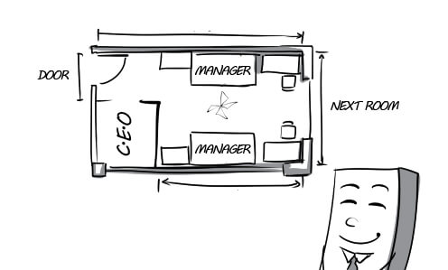
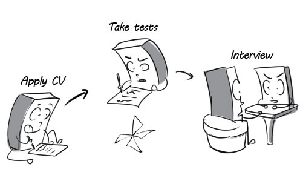
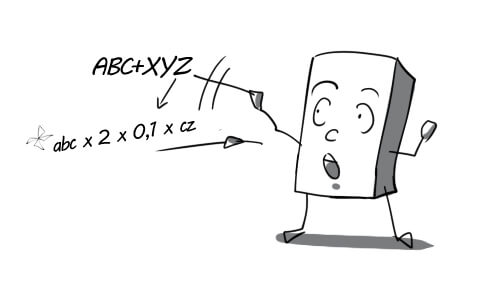
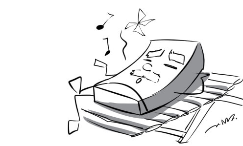
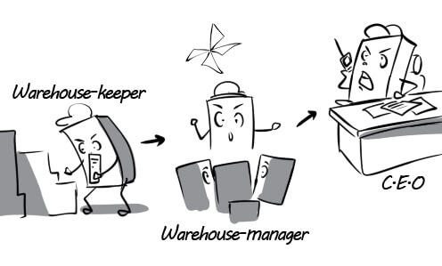
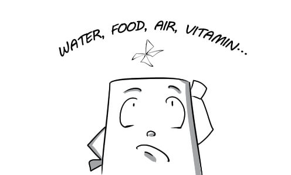
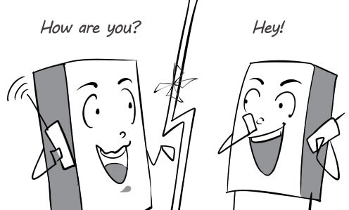
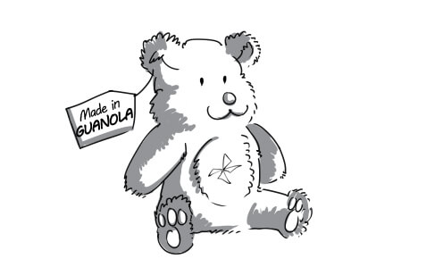

disk: CD is the abbreviation for Compact Disk.

facilitate: The new train station will facilitate the development of tourism.

network: This social network allows users to share information with each other very easily.
popularity: The popularity of online gaming has been rising in recent years.

process: It takes hours for the computer to process these files.

replace: Nowadays, the abacus is replaced by the pocket calculator.

revolution: There has been a great revolution in communications.

sharp: Nolan showed how sharp he was when he fixed the broken laptop in just 5 minutes.

skill: You have to master basic computer skills if you want to use this modern laptop.
software: This English learning software is very useful for children.

store: All files are stored in folders according to their type.

technical: We offer free technical support for those buying our computers.

assemble: The reporter assembled information for his article from many sources.

beforehand: To make it more convenient, we should stamp the envelopes beforehand.

complication: It's difficult for us to study Arabic because its script exhibit complications that are not found in the n scr
courier: I had the important letter delivered to the director by a courier.
express: DHL is one of the most popular express delivery services in the world.
fold: Jack folded his love letter very carefully and put it into an envelope.
layout: The director is very pleased with the layout of the new office.

mention: Lisa mentioned his debt of $2,000 in the letter.
petition: The workers are starting a petition for a salary increase.

proof: Peter proofed the important letter very carefully.
register: All the guests have to register at the front desk.
revise: You need to revise this letter because it is not formal enough.

abundant: The recruiter was surprised by the abundant number of candidates.
accomplish: Surprisingly, the candidate accomplished the 30-minute test in only less than ten minutes.
bring together: The HR manager brings together the candidates for the interview.

candidate: Andy overcame many candidates to secure this position.
come up with: The director came up with sales plans for the next year.

commensurate: Salary will be commensurate with the applicant's qualifications.

match: With his electronics engineering diploma, David is a perfect match for this job.
profile: Tuan was not accepted because he did not fit the job profile.
qualification: All of his qualifications meet the requirements of this position.
recruit: My company needs to recruit two janitors right now.

submit: I went to the HR department to submit my job application.

time-consuming: Recruitment is such a time-consuming process which includes many stages.

ability: With his exceptional ability, Peter won all the competitions that he took part in.
apply: The boss' son applies for the job by himself because he doesn't want to depend on his father.

background: His background in teaching is an advantage for this job.
call in: The human resource manager called in the next applicant for direct interviews.

confidence: The interviewer is easily attracted by applicant's confidence.

constantly: Michael is constantly applying for multiple jobs in different companies.

expert: This chef is an expert in Chinese cuisine.

hesitant: Tommy was hesitant to answer when he was asked about his salary expectations.

present: The candidate is presenting his ideas to the recruiters.

weakness: The new secretary's biggest weakness is her appearance.

conduct: My company is conducting a survey on the customers.

generate: The new factory generated a lot of job opportunities.

hire: I hired a landscape gardener to take care of my garden.
mentor: The mentor is teaching the interns how to do their job.

reject: Trung applied for a job as a translator, but he was rejected.

success: Daniel had much success in convincing the recruiter to hire him.

training: Many training courses are conducted to improve employees' skills.

update: The manager updated us on the new working time.

basis: On the basis of my education and experience, I believe that I am perfect for this job.

benefit: The new salary policy will be of benefit to all the employees.

compensate: The worker was compensated for his work injury.

delicately: Leo is asking his boss for a raise very delicately.

eligible: In Vietnam, you are eligible to vote when you are 18 years old.
flexible: David is very flexible in his work. He can undertake various jobs.
negotiate: Thomas is negotiating with the recruiter about his salary.

raise: Peter was very happy when he was given a pay raise.

retire: Mr Robert leads a leisurely life in Hawaii after retiring.

vest: The vice-director was vested to choose a new secretary.

wage: Andrew receives his salary on the 22nd of the month.

achievement: Everyone was proud of Lisa's achievements.

contribute: The boss was very content with the work they contributed to the project.
dedication: The professor always shows great dedication to his career.
loyal: Jack has been very loyal to his boss through thick and thin.
merit: The employee is awarded because of his merit.

obvious: Her acne was so obvious that everyone could see it.

productive: The workers had a very productive day at work.

promote: Mr Thomas was promoted to general manager after a long time of working for this company.

recognition: The manager presents a small amount of money to Peter in recognition of his contribution.
value: The expert valued the masterpiece at $10,000,000.
bargain: Mary is bargaining with the salesman to get the best deal.

bear: Leila cannot bear to queue under the sun to buy discounted clothes.

behavior: He is always on his best behavior when communicating with his clients.

checkout: Customers will pay for their merchandise at the checkout.

comfort: My wife always comforts me when I am sad.

expand: We've expanded the business by opening more stores in many cities.

explore: The little boy usually explores the toy section while his mother goes shopping.

item: This teddy bear is the top selling item in the toy shop.
mandatory: The shop has a mandatory policy of allowing customers to try on only 3 items at a time.

merchandise: The shop's wide selection of merchandise makes consumers very confused.

strict: This shop has a very strict return policy.
trend: Lady Gaga's high heels became the latest fashion trend.

diversify: Bluemilk diversified its products to attract more customers.

enterprise: My brother has been working as an intern in this enterprise for 3 months.

essential: Human being cannot grow strong and healthy without essential factors such as water, food, vitamins…

function: The train station still functions normally despite the power cuts.

maintain: Our company still maintains relations with big customers although we don't work with them anymore.

obtain: We finally obtained a contract with that company after long negotiations.

prerequisite: A Ph.D degree is an essential prerequisite for employment at this level.

quality: Blueway's products are of very high quality.
smooth: Peter coordinates closely with his colleagues to ensure the smooth running of the restaurant.

source: The source of this teddy bear is a small town in China.

stationery: I went to the stationery shop to buy some notebooks.